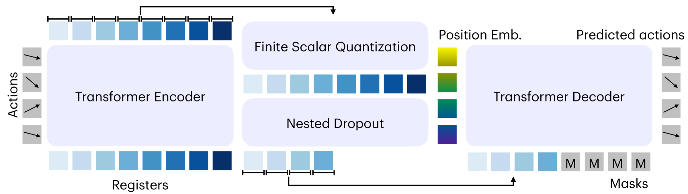
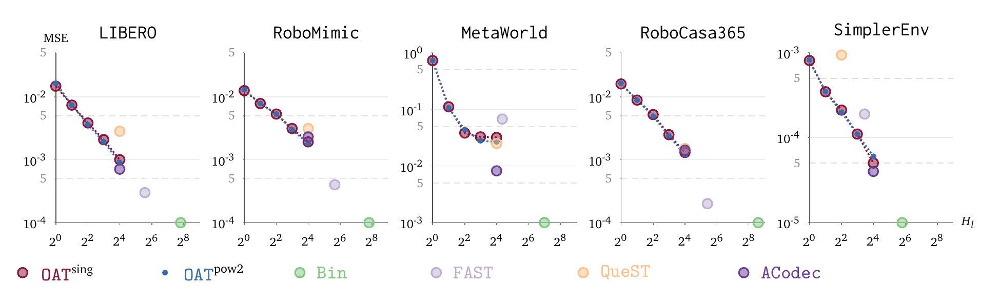
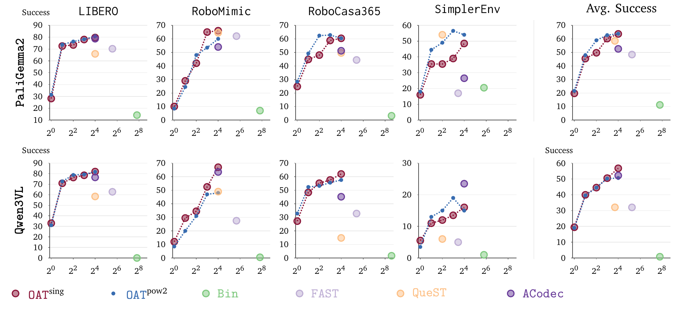
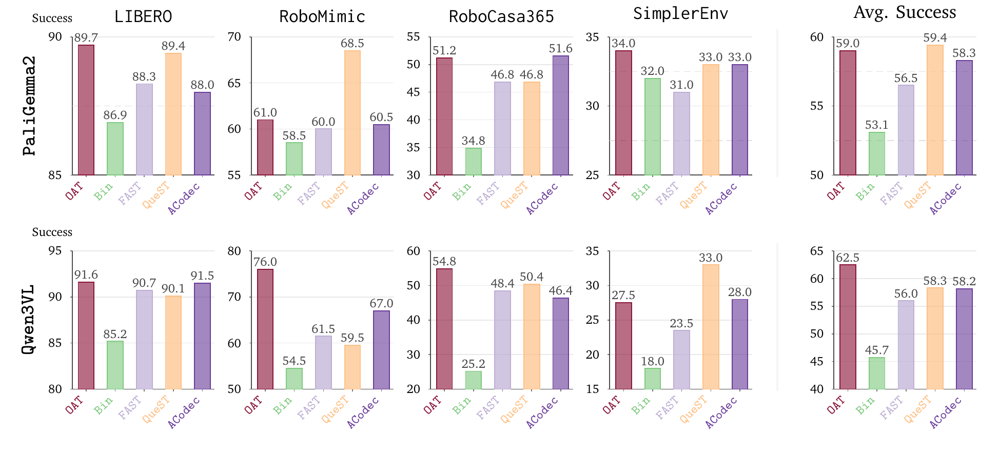

Ordered Action Tokenization
OAT 把连续的机器人动作变成一串紧凑的 token，并让它们从左到右逐步变得更精确。
1Harvard University · 2Stanford University

模型学习动作之前，我们得先决定怎么把动作写下来。
这个选择会决定预测序列有多长、每次预测能不能变成有效动作，以及前几个 token 是否已经包含有用信息。
有的太长，有的可能产生无效动作，还有的压缩得不错，却没有好用的先后顺序。
第一个 token 已经给出粗略但完整的动作，后面的 token 只负责把它变得更精确。
VLM 可以直接生成它来控制机器人，也可以只在训练时学习它，再由连续控制器输出最终动作。
本文会反复用到的五个术语。
- 动作块
- 一小段未来连续机器人动作序列，记作 \(a_{1:H_a}\in\mathbb{R}^{H_a\times D_a}\)。
- Action token
- 离散符号 \(T_i\in\mathcal{V}\)，既可以作为 AR 预测目标，也可以作为 VLM 的 token 监督。
- 有序前缀
- 一个已经可以解码成完整粗粒度动作块的前缀 \(T_{1:k}\)。
- BAR
- 一种分块式自回归生成方法，按 schedule 逐步增长 action-token 前缀。
- TC
- Token co-training：action token 监督 VLM，但机器人由连续 expert 控制；相关工作有时也称为 knowledge insulation (KI)。
Action tokenization 的三条设计原则。
高压缩率让序列保持简短；全域可解码保证 policy 的任意输出都能变成可执行动作；有序 token 结构把控制相关运动放在前面，把 residual 细节留到后面。
因此，tokenization 是 policy interface 问题，而不只是压缩问题。一个 tokenizer 即使重建动作很好，也未必适合策略：序列可能太长，采样得到的 token 可能无法解码，从左到右的排列可能不给策略提供有用结构，或者监督信号只是任意 latent serialization。
Token 序列应显著短于原始动作坐标，同时保留控制相关结构。
在固定 token horizon 和支持的 action vocabulary 上，任意离散输出序列都应映射到定义明确的连续动作块，而不只限于 encoder 产生的 code。
最重要的运动应该先出现，后面的 token 只补充更细的变化。
序列会随着动作维度和时间步一起增长，模型要预测的内容也越来越多。
不受约束的 BPE 采样不保证展开成 inverse DCT 所需的固定系数拓扑。
只优化完整 code 的重建，并不会显式训练早期 token 携带连贯、高影响力的控制结构。
分组自回归生成还有一个额外要求：tokenizer 和生成 schedule 必须使用相同的前缀边界。这会影响速度，但不是第四条核心标准。
现有 action tokenizer 分别满足哪些条件？
前三项是论文定义的核心要求。分块兼容性是额外属性，用于一次联合预测多个 token 的情况。
对 policy 的影响 长坐标序列会增加推理成本，也无法提供有力的 conditioning structure。
第一个 token 给出完整动作，后面的 token 把它变得更精确。
模型不需要等到最后一个 token 才拿到可用动作。短前缀先给出主要运动，更长的前缀再把细节补齐。

Encoder 看到完整动作，并把最有用的信息放在最前面。
FSQ 得到一段短序列，让 VLA 更容易稳定地预测。
训练时隐藏后面的 token，迫使前面的 token 先承担主要动作，后面的 token 再补细节。
在 Prefix Lab 里点选不同 token 数量，可以直接看到动作如何逐步变精确。MeshCat 轨迹展示同一个现象在实测机器人运动中的样子。
它同时追求紧凑、全域可解码和有序，并让训练过的前缀预算具有明确语义。
当策略每次只生成一个 token 时，长度为 \(K\) 的前缀仍需要 \(K\) 次顺序 VLA 调用。
在 VLM-scale AR 中，BAR 将生成代价显式化。
OAT 让有序前缀可执行，但长度为 \(K\) 的前缀仍需要 \(K\) 次顺序 VLA 调用。BAR 通过在前缀边界上引入 schedule 来降低这种串行深度，并统一 token-wise AR、block-wise AR 和 parallel decoding。

选择 AR 的分块粒度。
对一段 16-token 的 action-token 序列来说，schedule 决定顺序 VLA 调用次数，以及每次调用需要联合预测的最大块。
进度条显示已经生成的前缀，以及当前阶段正在生成的 block。
每个阶段生成一个新 token。
上下文最充分，但串行深度也最大。
每个 token 都能看到所有更早 token 作为上下文，但推理仍然完全串行。
它决定每次 VLA 调用生成多少 token，也就决定了串行深度和预测难度之间的取舍。
BAR policy 通过 block-shifted teacher forcing 学习联合 block targets；tokenizer 则必须单独提供与之匹配的重建预算和依赖结构。
分块生成必须同时对齐 OAT 与 BAR 的训练。
BAR policy 通过 block-shifted teacher forcing 联合预测每个 schedule block。Tokenizer 解决的是另一个与之匹配的问题：power-of-two OAT 在相同 endpoints 上训练重建，并阻断同一新 group 内 registers 之间的直接依赖；其 encoder、FSQ bottleneck、prefix decoder 和 nested-dropout 目标保持不变。
OATsing 和 OATpow2 训练不同的依赖模式。
BAR 会把后续 action-token positions 合并到同一个预测步骤里。关键问题是：新的 block 能否只依赖已实现前缀来联合预测，而不依赖同一 block 内部的串行依赖。
平坦因果链
行表示 query，列表示 key。
后续 registers 可以依赖所有更早的 registers。这适合 token-wise AR，但 post-hoc BAR 可能把一组已经在训练中学到块内串行依赖的 token 合并到同一个 block。
块因果 registers
2^n 块：[1] [2] [3-4] [5-8]
Registers 可以 attend 到更早 groups 和自身，但不能 attend 到同一 group 内的其他 registers。Tokenizer 因而避免直接的 group 内串行依赖；BAR policy 再单独学习联合预测该 block。
只改 schedule 不会让 OAT 变成 block-compatible。
在 PaliGemma2 的 LIBERO 实验中（每个任务 50 次 rollout 的平均成功率），post-hoc BAR 减少调用但损失成功率。Power-of-two OAT 使用匹配的 tokenizer endpoints 和 register dependencies，保留五次调用并弥合差距。
它改变了生成 schedule，但 tokenizer 训练时仍在每个 schedule block 内保留串行依赖。
它让 tokenizer budget 和 register mask 与 BAR policy 联合预测的 block 对齐。
先验证表示本身：每个训练过的前缀都必须可执行。
在训练 VLA policy 之前，我们先测量每个保留前缀是否真的增加了动作信息。短前缀应当已经能解码出粗粒度动作；后续 token 应该带来 refinement，而不是重复前缀已经携带的信息。
Nested dropout 在多个所选预算上训练重建，而不仅是端点 \(\varepsilon(H_l)\)。Token-wise OAT 使用每个 token 长度；单独训练的 power-of-two 变体使用边界 \(1,2,4,8,\ldots\)。二者分别在各自训练预算上形成渐进式 rate–distortion 曲线。
选择 1、2、4 或 8 个 token，每次都能得到完整动作。
OAT 的每个训练前缀都会解码成完整动作，而不是一个片段。这里可以看到 token 增加时路径如何变精确；下方 MeshCat 展示实测机器人轨迹。
1 个 token 可以解码出完整动作块，但重建较粗糙，且与真实轨迹有明显偏移。
这是概念示意，不是实测 rollout。绿色点表示参考路径；红色点示意所选训练预算下的完整动作块。 下方 MeshCat 面板提供实测重建。
看着动作一步步变精确。
早期 token 恢复主要运动，之后每个 token 再补充一些细节。下面所有轨迹都来自同一个 OAT tokenizer 和 decoder。
每增加一个 token，都应该让动作更好，而不是把它从错误中救回来。
只看最后的重建结果会漏掉重点。好的顺序应该在只有一两个 token 时就已经能用，之后再随着 token 增加而平稳变好。

OAT 保持紧凑，不会随着每个动作坐标一起增长。
两种 OAT 都会随着保留 token 增多而平滑降低重建误差。
每个 OAT 点都能解码成完整动作，而不是一小段坐标或频率系数。
OAT 的整条曲线都能被策略使用。固定长度的 baseline 没有训练过、可以直接执行的中间状态。
有序 token 更容易变成成功的机器人动作。
这是最严格的检验：VLM 预测出的 token 会真正驱动机器人。OAT 让模型先决定主要运动，再一步步补上细节。
两条曲线沿着前缀长度 \(1,2,4,8,16\) 前进。固定长度的 baseline 只出现在自己的单一序列长度上。
使用 PaliGemma2 时，分组版 OAT[16] 用五次模型调用就匹配了逐个生成所需的十六次调用。

两个不同的 VLM backbone 都能生成 OAT，并把它用于闭环控制。分组可以减少模型调用，但更大的组也更难预测，最佳平衡取决于 backbone。
动作 token 负责教，连续控制器负责做。
这里机器人不会执行、甚至不会解码 action token。Token 只是 VLM 的训练信号，这条 branch 会在部署前被移除。相关工作有时把这种设置称为 knowledge insulation。
OAT 给 VLM 提供从粗到细的动作目标。Stop-gradient 把这份训练信号和最终输出动作的连续控制器隔开。

只有 token loss 会更新 VLM。部署时不会生成或解码任何 action token；连续控制器直接根据缓存的 VLM context 控制机器人。
TC 目标包含两条路径。
Action-token branch 为 VLM 提供 action-aware 的 cross-entropy 信号。与此同时，action expert 学习一个以图像、语言和机器人状态 prefill 产生的 layer-wise K/V values 为条件的连续 flow-matching controller。Flow loss 把这些 K/V values 当作常量，只更新模型的 expert side。
\(\operatorname{sg}(\cdot)\) 表示 stop-gradient。Token loss 更新 VLM 上下文路径；flow loss 使用 detached context K/V values 更新连续 action expert，而不是使用 teacher-forced action-token positions 产生的 K/V values。
推理时，token branch 被移除。
部署时，VLM 仅以图像、语言和机器人状态作为上下文进行一次 prefill。它的 logits 会被忽略，不再运行 action-token decoding loop；controller 只保留 detached K/V cache。随后，连续 action expert 从这个固定上下文中迭代去噪生成动作块。
保持控制器不变，只换训练 token，机器人的表现就会改变。
这组对比只改变训练时使用的 tokenizer。连续控制器完全不变，但闭环结果会随着训练信号一起变化。
部署时始终使用同一个连续控制器，区别只在于哪个 action tokenizer 为 VLM 提供训练目标。
如果训练 token 不重要，这些柱子应该差不多。实际结果却明显不同。

即使部署时不解码任何 token，tokenizer 仍然会影响结果。OAT 取得最高平均值，或与最高结果基本持平，但并非在每个 benchmark 上都最好。这组对比改变了整个 tokenizer，因此不能单独证明排序是唯一原因。
选择动作 token 时，应该和选择策略模型一样认真。
好的 tokenizer 会缩短动作序列，保证每次预测都有效，并给模型一个清楚的学习顺序。无论 token 最后会被执行，还是只在训练时出现，这些性质都很重要。
当 VLM 直接生成动作时，OAT 先给它完整的粗略运动，再随着 token 增加提供更细的控制。
如果计划分组生成 token，训练 OAT 时就要使用相同的分组边界。只在部署时临时分组并不等价。
训练时使用的 token 会改变连续控制器收到的 VLM context。它不会因为部署时消失就变得无关紧要。
实验覆盖两个 VLM backbone、四类 benchmark、固定的控制器设计，以及部署前选定的 token 数量。Adaptive stopping 和更多机器人类型仍需继续检验。
论文、代码与引用
使用 OAT tokenizer 时请引用 OAT；使用受控 VLA 实验平台时请引用 Praxis。Full paper 的 arXiv 版本公开后，这里会再补上对应的 BibTeX。
对受控 VLA 实验感兴趣的读者可以使用 praxis-vla 进行训练，并使用 praxis-eval 完成评测。
@misc{liu2026oat,
title={OAT: Ordered Action Tokenization},
author={Chaoqi Liu and Xiaoshen Han and Jiawei Gao and Yue Zhao and Haonan Chen and Yilun Du},
year={2026},
eprint={2602.04215},
archivePrefix={arXiv},
primaryClass={cs.RO},
url={https://arxiv.org/abs/2602.04215},
}@misc{liu2026praxis,
title={Praxis: A Controlled Laboratory for Vision-Language-Action Policy Research},
author={Liu, Chaoqi},
year={2026},
url={https://chaoqi-liu.com/praxis/}
}